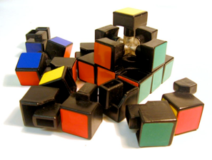

Face the challenge

Post #4
quarta-feira, 22 de agosto de 2012
Whenever starting a new project, a whole bunch of new stuff has to be created and prepared. That is true both for big and the small projects. Bootstrapping something from the scratch takes a lot of effort, because many details have to be considered (how is the communication going to be, what’s the team philosophy etc.), tough decisions have to be made (which technologies to use, what design of solution to use etc.) and tools have to be configured (databases, repositories, machines, servers, environments etc.).
The good thing being in a project during this period of time is that you can get a clear picture from the scratch of how things are organized, who depends on what and etc. Also, you participate on the decision-making process that will affect almost the whole lifetime of the project (this might also happen in the future, but usually it does in a smaller scale). The bad thing is that it might take away some of your hair during the process.
On the other hand, when you dive in into an on going project a lot of decisions have already been made. So now it’s up to you take some extra effort to understand how things are organized, who depends on whom, what’s the responsibility of each tool, how they are configured etc.
This step may be a bit painful, but if you’re on a really cool project where people care about the future, you should have some kind of guide to follow at least to have your environment set (bootstrap scripts, follow up guide etc.). I think it’s a good idea to do it on your own. That way, you can at least get your hands dirty doing some low level configuration. It will help you understand how things are supposed to fit together or at least how they are configured!
During my short career I had the chance to be on both situations more than a couple of times (that’s why I believe I have so much authority to talk about it). From my experience, I’d say that the second one is harder to be in both because some stuff might be new to you (when you’re starting a project and taking decisions usually you take decisions on what you already know how to work with it or heard of) or because the project and/or going for a long time. But none it’s not impossible. It does require more effort, but when you start getting things on your mind it becomes so much fulfilling and enlightening.
My message in this is: as much as things might sound hard at first, put your mind into it. Dive deeply and work as hard as you can and you will be able to overcome the difficulties and really learn some cool stuff. Some time later, the reward will be so good, that you will look for more!
De que servem as dificuldades senão para mostrarmos o quanto realmente desejamos algo.
